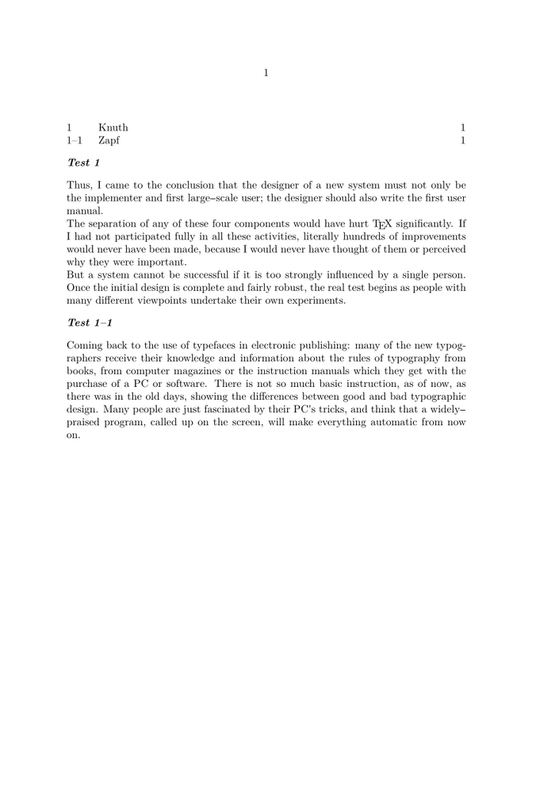

-
\defineseparatorset[dash][][--] \defineenumeration [test] [text=Test, headstyle=bolditalic, numberseparatorset=dash] \starttext \placelist[test] \starttest[title={Knuth}] \input knuth \stoptest \startsubtest[title={Zapf}] \input zapf \stopsubtest \stoptext
- 